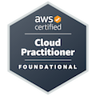

Jacob Runyan
Family
Projects
Resume
Home
Resume
Skills
Cloud Architect
HTML/CSS
Java
Python
SQL
Object-oriented design proficiency
Calculus
Education
Certifications
AWS Certified
Cloud Practitioner
Jun'23

Weber State Univerisity
Expected Jun'25
Web Development
Computational Structures
Software Engineering
Relational Database and SQL
Software Engineering
Calculus
University of Utah
Non-degree seeking
Developed. tested, and published a java application utilizing a game
engine components and gameplay routines
Accelerated introduction to object-oriented programming
Brighton High School
Graduated Jun'19
Text here
Text here
Experience
Web Developer, Stitches Quilting
Jun-16-Sept'17
Managed back-end portal of ecommerce WordPress website
Monitored inventory, orders and data structure
Constructed marketing and social media content
Package Handler, Fedex Ground
Sept'22-July'23
Constructing adaptive hard labor skills
Mastering collaborative teamwork
Custodian, This Is The Place Heritage Park
Nov'21-Sept'22
Maintained buildings
Constructed customer navigation signs
Collaborated with peers to establish creative solutions to business problems
Missionary, The Church of Jesus Christ of Latter-day Saints
Nov'19-Nov'21
Served as a missionary in the New York Syracuse mission
Mastered conversation and organizational skills
Collaborated with peers to increase church activity
Worked in leadership to support the development of missionaries